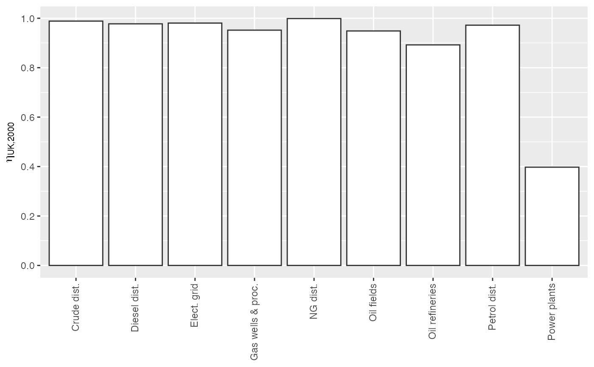

matsindf
vignettes/matsindf.Rmd
matsindf.RmdMatrices are important mathematical objects, and they often describe networks of flows among nodes. Example networks are given in the following table.
| System type | Flows | Nodes |
|---|---|---|
| Ecological | nutrients | organisms |
| Manufacturing | materials | factories |
| Economic | money | economic sectors |
The power of matrices lies in their ability to organize network-wide calculations, thereby simplifying the work of analysts who study entire systems.
But wouldn’t it be nice if there were an easy way to create data frames whose entries were not numbers but entire matrices? If that were possible, matrix algebra could be performed on columns of similar matrices.
That’s the reason for matsindf. It provides functions to convert a suitably-formatted tidy data frame into a data frame containing a column of matrices.
Furthermore, matsbyname is a sister package that …
dimnames in R) to free the analyst from the task of aligning rows and columns of operands (matrices) passed to matrix algebra functions andWhen used together, matsindf and matsbyname allow analysts to wield simultaneously the power of both matrix mathematics and tidyverse functional programming.
This vignette demonstrates the use of these packages and suggests a workflow to accomplish sophisticated analyses using matrices in data frames (matsindf).
UKEnergy2000
To demonstrate the use of matsindf functions, consider a network of energy flows from the environment, through transformation and distribution processes, and, ultimately, to final demand. Such energy flow networks are called energy conversion chains (ECCs), and this example is based on an approximation to a portion of the UK’s ECC circa 2000. (Note that these data are to be used for demonstration purposes only and have been rounded to 1–2 significant digits.) These example data first appeared in Figures 3 and 4 of Heun, Owen, and Brockway (2018).
head(UKEnergy2000, 2)
#> Country Year Ledger.side Flow.aggregation.point Flow
#> 1 GB 2000 Supply Total primary energy supply Resources - Crude
#> 2 GB 2000 Supply Total primary energy supply Resources - NG
#> Product E.ktoe
#> 1 Crude 50000
#> 2 NG 43000Country and Year contain only one value each, GB and 2000 respectively. Following conventions of the International Energy Agency’s energy balance tables,
Ledger.side indicates Supply or Consumption;Flow.aggregation.point indicates how data are to be aggregated;Flow indicates the industry, machine, or final demand sector for this flow;Product indicates the energy carrier for this flow; andE.ktoe gives the magnitude of this flow in units of kilotons of oil equivalent (ktoe).Each flow is its own observation (its own row) in the UKEnergy2000 data frame, making it tidy.
The remainder of this vignette demonstrates an analysis conducted using the UKEnergy2000 data frame as a basis. It:
matsbyname functions,The EnergyUK2000 data frame is similar to “cleaned” data from an external source: there are no missing entries, and it is tidy. But the data are not organized as matrices, and additional metadata is needed.
The collapse_to_matrices function converts a tidy data frame into a matsindf data frame using using information within the tidy data frame. So the first task is to prepare for collapse by adding metadata columns.
collapse_to_matrices needs the following information:
argument to collapse_to_matrices
|
identifies |
|---|---|
matnames |
Name of the input column of matrix names |
values |
Name of the input column of matrix entries |
rownames |
Name of the input column of matrix row names |
colnames |
Name of the input column of matrix column name |
rowtypes |
Optional name of the input column of matrix row types |
coltypes |
Optional name of the input column of matrix column types |
The following code gives the approach to adding metadata, appropriate for this application, relying on Ledger.side, the sign of E.ktoe, and knowledge about the rows and columns for each matrix. Each type of network will have its own algorithm for identifying row names, column names, row types, and column types in a tidy data frame.
UKEnergy2000_with_metadata <- UKEnergy2000 %>%
# Add a column indicating the matrix in which this entry belongs (U, V, or Y).
matsindf:::add_UKEnergy2000_matnames(.) %>%
# Add columns for row names, column names, row types, and column types.
matsindf:::add_UKEnergy2000_row_col_meta(.) %>%
mutate(
# Eliminate columns we no longer need
Ledger.side = NULL,
Flow.aggregation.point = NULL,
Flow = NULL,
Product = NULL,
# Ensure that all energy values are positive, as required for analysis.
E.ktoe = abs(E.ktoe)
)
head(UKEnergy2000_with_metadata, 2)
#> Country Year E.ktoe matname rowname colname rowtype coltype
#> 1 GB 2000 50000 V Resources - Crude Crude Industry Product
#> 2 GB 2000 43000 V Resources - NG NG Industry ProductWith the metadata now in place, UKEnergy2000_with_metadata can be collapsed to a matsindf data frame by the collapse_to_matrices function. Much like dplyr::summarise, collapse_to_matrices relies on grouping to indicate which rows of the tidy data frame belong to which matrices. The usual approach is to tidyr::group_by the matnames column and any other columns to be preserved in the output, in this case Country and Year.
EnergyMats_2000 <- UKEnergy2000_with_metadata %>%
group_by(Country, Year, matname) %>%
collapse_to_matrices(matnames = "matname", matvals = "E.ktoe",
rownames = "rowname", colnames = "colname",
rowtypes = "rowtype", coltypes = "coltype") %>%
rename(matrix.name = matname, matrix = E.ktoe)
# The remaining columns are Country, Year, matrix.name, and matrix
glimpse(EnergyMats_2000)
#> Observations: 3
#> Variables: 4
#> $ Country <chr> "GB", "GB", "GB"
#> $ Year <int> 2000, 2000, 2000
#> $ matrix.name <chr> "U", "V", "Y"
#> $ matrix <list> [<matrix[11 x 9]>, <matrix[11 x 12]>, <matrix[4 x 2…
# To access one of the matrices, try one of these approaches:
(EnergyMats_2000 %>% filter(matrix.name == "U"))[["matrix"]] # The U matrix
#> [[1]]
#> Crude dist. Diesel dist. Elect. grid Gas wells & proc.
#> Crude 0 0 0 0
#> Crude - Dist. 0 0 0 0
#> Crude - Fields 47500 0 0 0
#> Diesel 0 15500 0 0
#> Diesel - Dist. 25 0 0 50
#> Elect 0 0 6400 0
#> Elect - Grid 25 0 0 25
#> NG 0 0 0 43000
#> NG - Dist. 0 0 0 0
#> NG - Wells 0 0 0 0
#> Petrol 0 0 0 0
#> NG dist. Oil fields Oil refineries Petrol dist.
#> Crude 0 50000 0 0
#> Crude - Dist. 0 0 47000 0
#> Crude - Fields 0 0 0 0
#> Diesel 0 0 0 0
#> Diesel - Dist. 25 50 0 250
#> Elect 0 0 0 0
#> Elect - Grid 25 25 75 0
#> NG 0 0 0 0
#> NG - Dist. 0 0 0 0
#> NG - Wells 41000 0 0 0
#> Petrol 0 0 0 26500
#> Power plants
#> Crude 0
#> Crude - Dist. 0
#> Crude - Fields 0
#> Diesel 0
#> Diesel - Dist. 0
#> Elect 0
#> Elect - Grid 100
#> NG 0
#> NG - Dist. 16000
#> NG - Wells 0
#> Petrol 0
#> attr(,"rowtype")
#> [1] "Product"
#> attr(,"coltype")
#> [1] "Industry"
EnergyMats_2000$matrix[[2]] # The V matrix
#> Crude Crude - Dist. Crude - Fields Diesel Diesel - Dist.
#> Crude dist. 0 47000 0 0 0
#> Diesel dist. 0 0 0 0 15150
#> Elect. grid 0 0 0 0 0
#> Gas wells & proc. 0 0 0 0 0
#> NG dist. 0 0 0 0 0
#> Oil fields 0 0 47500 0 0
#> Oil refineries 0 0 0 15500 0
#> Petrol dist. 0 0 0 0 0
#> Power plants 0 0 0 0 0
#> Resources - Crude 50000 0 0 0 0
#> Resources - NG 0 0 0 0 0
#> Elect Elect - Grid NG NG - Dist. NG - Wells Petrol
#> Crude dist. 0 0 0 0 0 0
#> Diesel dist. 0 0 0 0 0 0
#> Elect. grid 0 6275 0 0 0 0
#> Gas wells & proc. 0 0 0 0 41000 0
#> NG dist. 0 0 0 41000 0 0
#> Oil fields 0 0 0 0 0 0
#> Oil refineries 0 0 0 0 0 26500
#> Petrol dist. 0 0 0 0 0 0
#> Power plants 6400 0 0 0 0 0
#> Resources - Crude 0 0 0 0 0 0
#> Resources - NG 0 0 43000 0 0 0
#> Petrol - Dist.
#> Crude dist. 0
#> Diesel dist. 0
#> Elect. grid 0
#> Gas wells & proc. 0
#> NG dist. 0
#> Oil fields 0
#> Oil refineries 0
#> Petrol dist. 26000
#> Power plants 0
#> Resources - Crude 0
#> Resources - NG 0
#> attr(,"rowtype")
#> [1] "Industry"
#> attr(,"coltype")
#> [1] "Product"
EnergyMats_2000$matrix[[3]] # The Y matrix
#> Residential Transport
#> Diesel - Dist. 0 14750
#> Elect - Grid 6000 0
#> NG - Dist. 25000 0
#> Petrol - Dist. 0 26000
#> attr(,"rowtype")
#> [1] "Product"
#> attr(,"coltype")
#> [1] "Sector"Larger studies will include data for multiple countries and years. The ECC data from UK in year 2000 can be duplicated for 2001 and for a fictitious country AB. Although the data are unchanged, the additional rows serve to illustrate the functional programming aspects of the matsindf and matsbyname packages.
Energy <- EnergyMats_2000 %>%
# Create rows for a fictitious country "AB".
# Although the rows for "AB" are same as the "GB" rows,
# they serve to illustrate functional programming with matsindf.
rbind(EnergyMats_2000 %>% mutate(Country = "AB")) %>%
spread(key = Year, value = matrix) %>%
mutate(
# Create a column for a second year (2001).
`2001` = `2000`
) %>%
gather(key = Year, value = matrix, `2000`, `2001`) %>%
# Now spread to put each matrix in a column.
spread(key = matrix.name, value = matrix)
glimpse(Energy)
#> Observations: 4
#> Variables: 5
#> $ Country <chr> "AB", "AB", "GB", "GB"
#> $ Year <chr> "2000", "2001", "2000", "2001"
#> $ U <list> [<matrix[11 x 9]>, <matrix[11 x 9]>, <matrix[11 x 9]>, …
#> $ V <list> [<matrix[11 x 12]>, <matrix[11 x 12]>, <matrix[11 x 12]…
#> $ Y <list> [<matrix[4 x 2]>, <matrix[4 x 2]>, <matrix[4 x 2]>, <ma…An important step in any analysis is data verification. For an ECC analysis, it is important to verify that energy is conserved (i.e., energy is in balance) across all industries. Equations 1 and 2 in Heun, Owen, and Brockway (2018) show that energy balance is verified by
\[{\mathbf{W}} = {{\mathbf{V}}^\mathrm{T}} - {\mathbf{U}},\]
and
\[{\mathbf{W}}{\mathbf{i}} - {\mathbf{Y}}{\mathbf{i}} = {\mathbf{0}}.\]
Energy balance verification can be implemented with matsbyname functions and tidyverse functional programming:
Check <- Energy %>%
mutate(
W = difference_byname(transpose_byname(V), U),
# Need to change column name and type on y so it can be subtracted from row sums of W
err = difference_byname(rowsums_byname(W),
rowsums_byname(Y) %>%
setcolnames_byname("Industry") %>% setcoltype("Industry")),
EBalOK = iszero_byname(err)
)
Check %>% select(Country, Year, EBalOK)
#> Country Year EBalOK
#> 1 AB 2000 TRUE
#> 2 AB 2001 TRUE
#> 3 GB 2000 TRUE
#> 4 GB 2001 TRUE
all(Check$EBalOK %>% as.logical())
#> [1] TRUEThis example demonstrates that energy balance can be verified for all combinations of Country and Year with a few lines of code. In fact, the exact same code can be applied to the Energy data frame, regardless of the number of rows in it.
Secure in the knowledge that energy is conserved across all ECCs in the Energy data frame, other analyses can proceed.
To further illustrate the power of matsbyname functions in the context of matsindf, consider the calculation of the efficiency of every industry in the ECC as column vector \(\eta\) as shown by Equation 11 of Heun, Owen, and Brockway (2018).
\[{\mathbf{g}} = {\mathbf{V}}{\mathbf{i}}\]
\[{\mathbf{\eta}} = {{\widehat{{{\mathbf{U}}^\mathrm{T}} {\mathbf{i}}}^{\mathrm{-}1}}} {\mathbf{g}}\]
Etas <- Energy %>%
mutate(
g = rowsums_byname(V),
eta = transpose_byname(U) %>% rowsums_byname() %>%
hatize_byname() %>% invert_byname() %>%
matrixproduct_byname(g) %>%
setcolnames_byname("eta") %>% setcoltype("Efficiency")
) %>%
select(Country, Year, eta)
Etas$eta[[1]]
#> eta
#> Crude dist. 0.9884332
#> Diesel dist. 0.9774194
#> Elect. grid 0.9804688
#> Gas wells & proc. 0.9518282
#> NG dist. 0.9987820
#> Oil fields 0.9485771
#> Oil refineries 0.8921933
#> Petrol dist. 0.9719626
#> Power plants 0.3975155
#> attr(,"rowtype")
#> [1] "Industry"
#> attr(,"coltype")
#> [1] "Efficiency"Note that only a few lines of code are required to perform the same series of matrix operations on every combination of Country and Year. In fact, the same code will be used to calculate the efficiency of any number of industries in any number of countries and years!
Plotting values from a matsindf data frame can be accomplished by expanding the matrices of the matsindf data frame (in this example, Etas) back out to a tidy data frame. Expanding is the reverse of collapse-ing, and the following information must be supplied to the expand_to_tidy function:
argument to expand_to_tidy
|
identifies |
|---|---|
matnames |
Name of the input column of matrix names |
matvals |
Name of the input column of matrices to be expanded |
rownames |
Name of the output column of matrix row names |
colnames |
Name of the output column of matrix column name |
rowtypes |
Optional name of the output column of matrix row types |
coltypes |
Optional name of the output column of matrix column types |
drop |
Optional value to be dropped from output (often 0) |
Prior to expanding, it is usually necessary to gather columns of matrices.
etas_forgraphing <- Etas %>%
gather(key = matrix.names, value = matrix, eta) %>%
expand_to_tidy(matnames = "matrix.names", matvals = "matrix",
rownames = "Industry", colnames = "etas",
rowtypes = "rowtype", coltypes = "Efficiencies") %>%
mutate(
# Eliminate columns we no longer need.
matrix.names = NULL,
etas = NULL,
rowtype = NULL,
Efficiencies = NULL
) %>%
rename(
eta = matrix
)
# Compare to Figure 8 of Heun, Owen, and Brockway (2018)
etas_forgraphing %>% filter(Country == "GB", Year == 2000)
#> # A tibble: 9 x 4
#> Country Year Industry eta
#> <chr> <chr> <chr> <dbl>
#> 1 GB 2000 Crude dist. 0.988
#> 2 GB 2000 Diesel dist. 0.977
#> 3 GB 2000 Elect. grid 0.980
#> 4 GB 2000 Gas wells & proc. 0.952
#> 5 GB 2000 NG dist. 0.999
#> 6 GB 2000 Oil fields 0.949
#> 7 GB 2000 Oil refineries 0.892
#> 8 GB 2000 Petrol dist. 0.972
#> 9 GB 2000 Power plants 0.398etas_forgraphing is a data frame of efficiencies, one for each Country, Year, and Industry, in a format that is amenable to plotting with packages such as ggplot.
The following code creates a bar graph of efficiency results for the UK in 2000:
etas_UK_2000 <- etas_forgraphing %>% filter(Country == "GB", Year == 2000)
etas_UK_2000 %>%
ggplot(mapping = aes_string(x = "Industry", y = "eta",
fill = "Industry", colour = "Industry")) +
geom_bar(stat = "identity") +
labs(x = NULL, y = expression(eta[UK*","*2000]), fill = NULL) +
scale_y_continuous(breaks = seq(0, 1, by = 0.2)) +
scale_fill_manual(values = rep("white", nrow(etas_UK_2000))) +
scale_colour_manual(values = rep("gray20", nrow(etas_UK_2000))) +
guides(fill = FALSE, colour = FALSE) +
theme(axis.text.x = element_text(angle = 90, vjust = 0.4, hjust = 1))
This vignette demonstrated the use of the matsindf and matsbyname packages and suggested a workflow to accomplish sophisticated analyses using matrices in data frames (matsindf).
The workflow is as follows:
UKEnergy2000 above.collapse_to_matrices to create a data frame of matrices with columns for matrix names and matrices themselves, similar to EnergyMats_2000 above.tidyr::spread the matrices to obtain a data frame with columns for each matrix, similar to Energy above.Check above.matsbyname functions in a manner similar to the process of generating the Etas data frame above.tidyr::gather the columns to obtain a tidy data frame of matrices.expand_to_tidy to create a tidy data frame of matrix elements, similar to etas_forgraphing above.Data frames of matrices, such as those created by matsindf, are like magic spreadsheets in which single cells contain entire matrices. With this data structure, analysts can wield simultaneously the power of both matrix mathematics and tidyverse functional programming.
Heun, Matthew Kuperus, Anne Owen, and Paul E. Brockway. 2018. “A Physical Supply-Use Table Framework for Energy Analysis on the Energy Conversion Chain.” Applied Energy 226 (September): 1134–62. doi:10.1016/j.apenergy.2018.05.109.